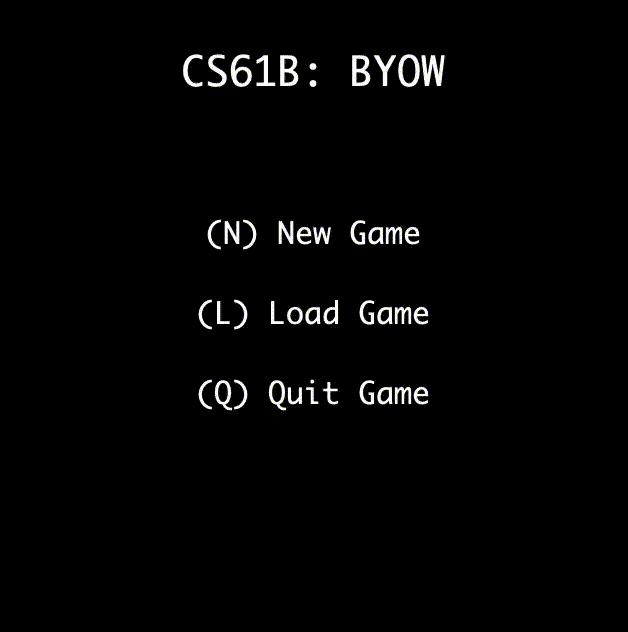
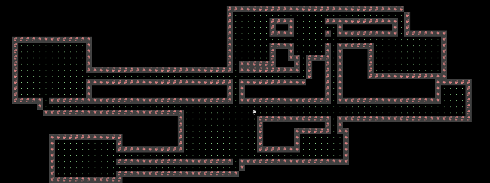

3B: Gameplay
Deadlines
| Assignment | Tasks | Deliverable | Points | Due Date |
|---|---|---|---|---|
| Team Formation | - Task 0: Partnerships | Pre-Project Google Form | 5 | Mon, Nov 11 11:59pm PT |
| Project 3A | - Task 1: Setup - Task 2: World Generation |
World Screenshots on Gradescope | 10 | Mon, Nov 18 11:59pm PT |
| Mid-Project Google Form | 5 | |||
| Project 3B | - Task 3: Main Menu - Task 4: Interactivity - Task 5: Saving and Loading - Task 6: Ambition Features |
Code on Gradescope (0 pts, but required for checkoff) |
0 | Tue, Nov 26 11:59pm PT |
| Live Checkoff with TA (Checkoffs will happen Dec 2–6) |
100 | |||
| Post-Project Google Form | 5 |
Task 3: Main Menu
In Project 3A, when a user ran the main method in Main.java, they saw a world pop up. We’ll now change this to give the user a nice menu.
Now, when a user runs Main.main, they should see some Main Menu text pop up, like this:

The menu should give the user these options:
- Pressing
Nornon the main menu creates a new game. - Pressing
Lorlon the main menu loads a saved game from the save file. - Pressing
Qorqon the main menu closes the window. To close the window, runSystem.exit(0).
The user should be able to press the corresponding keys on the keyboard to select an option.
Notice that the key presses are not case-sensitive. The user should be able to press either N or n, and the behavior should be the same (new game created).
Besides the requirements above, you can customize the appearance of this menu however you like.
If the user presses N or n, they should see a new screen that allows them to enter a seed, like this:

The screen should show the user the value that the user has entered so far. In other words, every time the user types a digit, that digit should immediately appear on screen (next to all the other digits typed).
After the user is done typing their seed, the user should be able to press S or s to start the game. You should display a world generated from the user’s seed.
Again, besides the requirements above, you can customize the appearance of this menu however you like.
Here are some features you don’t need to support (unless you want to). The behavior of these cases is undefined, which means that your code can do anything in these cases (e.g. crash, or display an error, or anything else).
- The user entering seeds outside of the range [0, 9223372036854775807] is undefined. These are the values representable by the
longprimitive data type in Java. - The user typing disallowed characters on the seed screen (i.e. anything except
0123456789sS) is undefined. For example, the user pressing Backspace, or typing a comma, or typingQ, or typing other alphabetical characters on the seed screen, is undefined.
Task 4: Interactivity
Next, let’s give the user the ability to move an avatar around the world.
When the user starts the game, the world you generated should additionally include a single avatar tile representing the user. In the example below, the @ tile is the avatar. Your avatar can look different, as long as there is a clear single avatar.

The avatar can start on any floor square. The starting square doesn’t need to be randomly-chosen, e.g. it can always be the bottommost-leftmost floor square. However, the starting square does need to be deterministic, e.g. entering the same seed twice should result in the avatar in the same square. See the section below for more details on determinism.
The user should be able to move the avatar around the world as follows:
Worwshould move the avatar up one square.Aorashould move the avatar left one square.Sorsshould move the avatar down one square.Dordshould move the avatar right one square.
If the user attempts to move into a wall, the avatar should stay in the same place, and the program should not crash. For example, in the sample world above, pressing W or w once should move the avatar up, and then pressing W or w again should not move the avatar.
You don’t need to support pressing and holding down a key. It’s fine if holding down a key results in undefined behavior.
Later in the project, you can add additional gameplay features if you’d like. For example, a power-up could allow the user to move through walls or move multiple squares at once. Or, the user could use an additional key P to push items around. Additional features are fine, as long as you follow the basic spirit of interactivity outlined here, where users can move around, but are limited by walls.
Overview: Animating the Game
To animate your game, you need to continuously re-render updates to your game state. These updates will vary depending on the specific scene you are in. You can conceptualize this process as a “game loop.” Your world movement scene might be characterized by the following game loop:
- Initialize the game window and the world state.
- Update the movements of the avatar based on the player’s input.
- Render the updated game state in the game window.
- Repeat steps 2 and 3 until the player quits.
Check out GameLoopDemo.java, located in the demo folder of your Project 3 repo, for an example of what this might look like.
In general, good coding practice is to first build small procedures with explicit purposes and then compose more complex methods using the basic ones. It will give you a clear path forward in development and will be easier to break down your logic for unit testing.
Overview: Determinism
Your game should be deterministic. This means that if two users press the exact same keys in the exact same sequence, the resulting state of their game should be exactly the same. For example, the 2D tile grid should be exactly the same, and any other features you add (e.g. points, health bar, etc.) should also be exactly the same.
Recall that we already used pseudorandomness to make the new-game process deterministic. If two users type in the same seed, they’ll get the exact same world.
As you start to add more features from now on, make sure that your game is still deterministic. You can still use pseudorandomness to help you ensure determinism.
Note on real-time gameplay:
The easiest way to produce deterministic behavior is for your game to not depend on real-time. Some examples of non-real-time behavior:
- If the user presses the same sequence of keys very quickly, or very slowly, the resulting behavior should be exactly the same.
- If you have features like a countdown timer, the timer should be measured by number of moves (e.g. decrement each time the user moves), as opposed to real-time like number of seconds.
- If you have features like enemy character spawning, you can spawn an enemy every 5 moves, as opposed to something real-time like every 5 seconds.
If you do intend to implement real-time behavior, that’s fine, as long as anybody can easily produce deterministic behavior by pressing the same keys in the same sequence. For example, asking the user to press a key within a 10-second timer is fine and reproducible, but asking the user to press 20 keys within a 0.1-second timer is too hard to reproduce reliably.
Task 5: Saving and Loading
Suppose the user is playing your game, but needs to take a break. (Maybe they need to attend a CS 61B lecture?) Let’s give users a way to save their progress and load back a game later.
Here’s a video demo of the saving and loading process:
When the user is in “World mode” (looking at a 2D world, not the main menu), they should be able to press :q or :Q to immediately save the game and quit the program. To quit the program, run System.exit(0).
When the user quits your program, all Java variables will be lost. Therefore, you will need to save the user’s progress in a file, like save.txt. What you put in save.txt is up to you, but it should contain enough information to perfectly reconstruct the user’s game later.
Some notes on the keypresses:
:Qis two characters pressed separately. The user first presses colon only, and then they press Q only.:Qor:qin “World mode” should immediately save and quit, with no further key-presses needed to complete. For example, don’t ask the user if they are sure before quitting.- In “Menu mode” (looking at the main menu), pressing Q alone should quit the program, without saving anything.
- In “World mode” (looking at a 2D world), pressing Q alone should do nothing, and pressing
:Qshould save the game and quit the program. - In “World mode,” pressing colon, followed by any other letter, should not do anything.
If the user presses L or l on the main menu, you should load the most-recently-saved world from the save.txt file.
The loaded world should be in the exact same state before the user quit the game. For example, these two scenarios should result in identical worlds:
- The user types
N999SDDDWWW(New Game, seed 999, Start, move right 3 times, move up 3 times). - The user types
N999SDDD:Q(New Game, seed 999, Start, move right 3 times, save). Then, the user re-starts the program and typesLWWW(Load, move up 3 times).
The loaded world should be identical, including the state of the random number generator! For example, if your game generates an enemy in a random square on every move, then the exact same enemies should be generated whether the user plays the game continuously, or with a save/load in the middle.
Here are some cases of undefined behavior. Remember, undefined behavior means your code can crash, display an error, or do anything else you want. We won’t test these cases.
- If there is no previous save, and the user presses
Lorlon the main menu, the behavior is undefined. - If the user quits the program some other way (e.g. quits IntelliJ, or unplugs their computer), the behavior is undefined. You don’t need to save anything in this case.
Task 6: Ambition Features
Now that you have a basic game working, in the last part of the project, you’ll get a chance to add any creative features of your own choosing!
Your game should still meet all the requirements from previous tasks. For example, you can add an extra option on the main menu to select an avatar appearance, but you cannot remove the existing options (Load, New Game, and Quit).
For a list of pre-approved ambition features, see our ambition features list.
If you have your own feature you’d like to implement, please ask on the feature request Ed thread and we’ll let you know if the feature is approved!
Deliverables
Gradescope
Submit the code of the game you want us to grade to Gradescope.
There is no autograder, but we need a submission in order to assign you a grade during your live checkoff (see below).
The code you present during your live checkoff needs to be the same as the code you submitted to Gradescope.
Live Checkoff
Project 3B will be graded in a live checkoff with a TA. These checkoffs typically happen during the last week of class, before RRR week. Checkoffs are held in-person, though we will have a very limited number of remote checkoffs for documented reasons (e.g. sickness).
Exact details, including how to sign up for a checkoff slot, will be posted on Ed closer to the start of checkoffs.
For a full run-down of how the checkoff will work, see the checkoff script.
Post-Project Partnership Form
Submit the Project 3 Post-Project Partnership Form.
You will receive an email receipt to confirm that you’ve submitted it.
Your form response is confidential between you and staff. The response will not be shared with your partner.
Warning: Don’t forget the form! Students every semester forget this form and they are sad.
Optional: Autograder
We have provided an optional autograder on Gradescope for you to validate some of your game features. The autograder mainly checks that the game is deterministic, e.g. entering the same input string twice leads to the same worlds. It also checks that loading and saving works as intended, e.g. N999SDDDWWW produces the same world as N999SDDD:Q followed byLWWW. The autograder won’t check any ambition features.
The autograder (and AutograderBuddy.java) is completely optional: There is no extra credit for submitting to it, and there is no penalty for not submitting to it. Because the autograder is optional, we won’t offer any staff debugging support for it.
To help the autograder see your world, you would need to fill out the getWorldFromInput method in AutograderBuddy.java. See the Project 3A spec for more information.
Some disclaimers about the optional Project 3B autograder:
- If an input string contains
:qor:Q, you can ignore all characters after that input string. - Make sure that AutograderBuddy.java never calls
System.exit(0), directly or indirectly. This will cause the autograder to crash. - The autograder does not support any real-time features (e.g. “collect all the coins in 10 seconds”). In other words, the autograder expects that the user can press the keys at any speed, and the result should be the same. Submitting games with real-time requirements to the autograder will result in undefined autograder behavior.
Note: Since autograders are optional in Project 3, we will not be enforcing the 61B style guide on this project. However, we still highly recommend following the style guide, so that your code is readable by your partner!